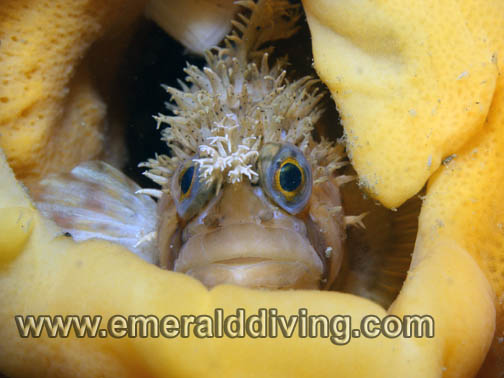
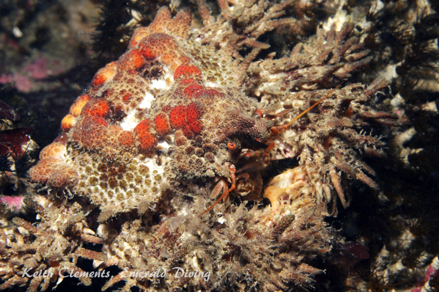
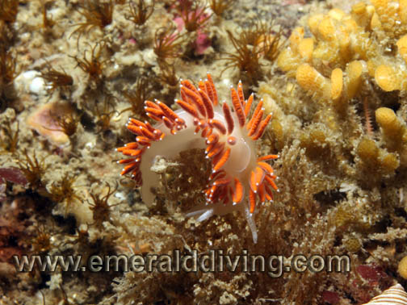
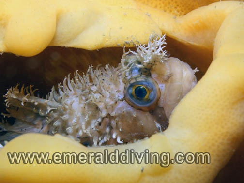

©2010 Emerald Diving, All Rights Reserved
Dive Reports
Emerald Diving
Explore the coastal and inland waters of
Washington and BC
Explore the coastal and inland waters of
Washington and BC
Emerald Diving
Explore the coastal and inland waters of
Washington and BC
Explore the coastal and inland waters of
Washington and BC
Emerald Diving
Explore the coastal and inland waters of
Washington and BC
Explore the coastal and inland waters of
Washington and BC


Another busy day of San Juan Island diving began at 5:45 AM as I rolled out of bed and started the trek north, picking up several dive buddies along the way. Today’s objective was two-fold: First, we wanted to dive a pinnacle between Sucia and Patos Islands that comes within 50 feet of the surface an rapidly drops to depths of over 200 feet on either side. We did this dive last year on a “good” current day and encountered a very terse current. I was determined to get back to this site and photograph the unique local orange soft corals that reside on this pinnacle. Since that dive I found more orange soft coral off Tumbo Island, but I was determined to revisit this remarkable site and get some pics. It was near impossible to make progress against the current during our dive last year on the pinnacle - and that was without a camera. Pushing a camera through the water would exasperate the situation by orders of magnitude.
The other object of today’s adventure was to test the HD sports video camera my company (Twenty20) makes in a new scuba enclosure built by Gregg. The video camera is a fire-and-forget design with no viewing screen. It was designed to be mounted to a helmet, windshield, goggles, or handlebars, then turned on and let the good times roll. We figured it might have a practical scuba application, although that would be a tall order in murky Pacific Northwest waters.
The other object of today’s adventure was to test the HD sports video camera my company (Twenty20) makes in a new scuba enclosure built by Gregg. The video camera is a fire-and-forget design with no viewing screen. It was designed to be mounted to a helmet, windshield, goggles, or handlebars, then turned on and let the good times roll. We figured it might have a practical scuba application, although that would be a tall order in murky Pacific Northwest waters.
North San Juans: June 27, 2009

The shy decorated warbonnet - a highly prized find by most divers, especially when found taking up residence in a beautiful cloud sponge.
Sea strawberries, unusual in that they are a very pale pink.

We launched at Washington Park around 8:00AM and made it to the pinnacle by 9:30 AM. Although it was supposedly slack before ebb when we arrived, we were greeted by standing 1-2 foot waves at the dive site as the current howled over the pinnacle. Pass.
Jon and I opted for a more sedate exploratory dive on the southwest end of Patos Island next to Active Cove. This was a very nice dive. Vis was a respectable 15-20 feet. I was joined by a stellar sealion upon my initial descent in the shallows. The sealion made three passes before satisfying its curiosity and heading elsewhere. I followed the moderately sloping rock and kelp laden topography downward to about 70 feet where it finally went vertical. The walls are well encrusted with invertebrates and the surrounding structure provided excellent habitat for rockfish. I even found a sub-adult yelloweye that was coy enough to avoid my camera. I had to settle for some Puget Sound king crab pics instead.
Being so close to Tumbo Island, we couldn’t resist darting 5 miles to the west to Tumbo Channel for our second dive. This is one of my favorite dives in the Pacific Northwest. Rob entered the water first, and was followed by Jon about 30 minutes later. I waited for Rob


Heart crab.
Verrucose nudibranch devours a bounty of hydroids.



Mosshead warbonnet
Decorated warbonnet
Adult Puget Sound king crab
to surface before entering the water and received a disappointing report - only 15 feet of vis and very strong currents on the wall. I switched my camera over to macro and jumped in about a half mile from the eastern point of Tumbo Island. I was greeted by 30+ feet of vis and no current. After wondering if Rob was breathing argon instead of Nitrox, I descended to 100 feet where I found a magnificent orange cloud sponge inhabited by a decorated warbonnet with yelloweye (juvenile), copper, quillback, and Puget Sound rockfish scurrying about. I had little to slightly moderate current during the entire dive and only travelled a couple hundred yards to the east during my hour underwater. This site is truly a gem - the diversity of invertebrate life on this sheer wall are amazing - feather stars, sea peaches, fields of lobatus, sheets of giant plumose anemones, orange social ascidians, zoanthids, and the myriad of creature living amongst them. I could have easily done my third dive here as well.
Upon surfacing, I was greeted by a delicious plate of BBQ pork-loin and vegetables prepared by master chef Rob. Talk about hitting the spot!! Rob may not be able to gauge the visibility underwater in Canada, but he can sure BBQ on a boat. After lunch, we headed back to the pinnacle off Patos. The waters topside looked much more promising, but there was still a 1.5 knot current running perpendicular over the reef. The tide table revealed that the current had already started to flood and would quickly intensify. After some debate, discretion won out and we settled for a last dive at Lawson Bluff off Sucia, which I have done many times before. Although not as exhilarating as the pinnacle, we all lived to tell about it.
We also successfully pressure tested Gregg’s new scuba housing for the Twenty20 ContourHD to 115 and even shot some video with it. Although this camera would be an excellent setup in clear tropical waters where lots of ambient light is present, the 135 degree lens combined with spot HID lights in dark waters do not work well together. Maybe I’ll need to convince Twenty20 to send me to Palau to do further testing….
We also successfully pressure tested Gregg’s new scuba housing for the Twenty20 ContourHD to 115 and even shot some video with it. Although this camera would be an excellent setup in clear tropical waters where lots of ambient light is present, the 135 degree lens combined with spot HID lights in dark waters do not work well together. Maybe I’ll need to convince Twenty20 to send me to Palau to do further testing….